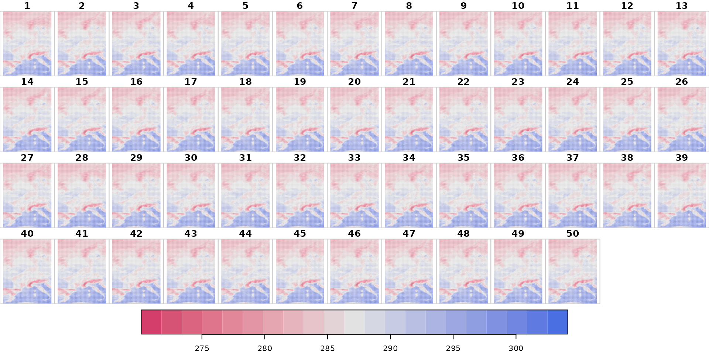
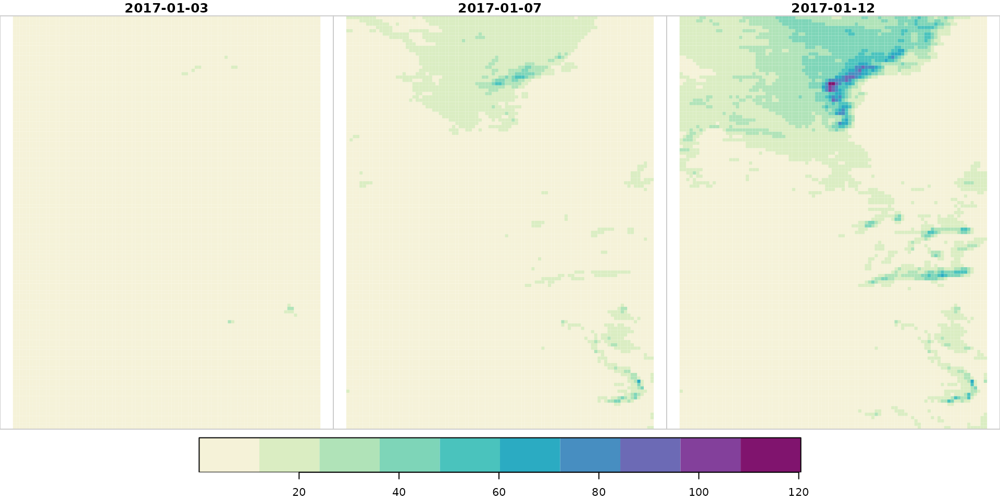
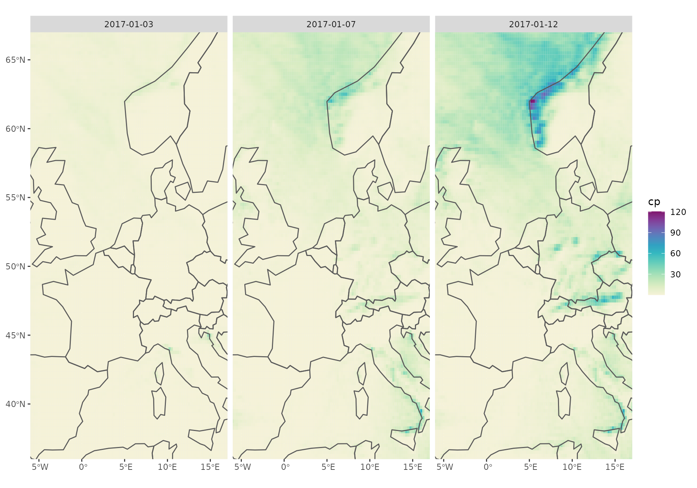

Rough scheme on the download/processing process.
The data sets are stored as GRIB version 1 files on the servers alongside with a GRIB index file which contains the inventory. The inventory contains information of all fields inside the GRIB file and allows to partially download the fields.
When downloading data, the package always first accesses the index file via eupp_get_inventory() before starting to download the data. eupp_download_gridded() will download (parts) of the GRIB file and either store it as GRIB, or converts it to NetCDF (requires NetCDF support and ecCodes to be installed; see installation notes).
eupp_get_gridded() interfaces eupp_download_gridded() but deletes the file after use and returns an R object. This can be handy for small tasks or checks, or if you want to store the data as R objects yourself. Also requires NetCDF support.
Specify data to be downloaded
Before starting downloading data a configuration object must be created using eupp_config() which contains the specification of the data to be retrieved.
# Loading the package
library("eupp")
# Create custom configuration
conf <- eupp_config(product = "forecast",
level = "surf",
type = "ens",
date = "2017-07-01",
parameter = c("cp", "2t"),
steps = c(24L, 240L), # +1 and +10 days ahead
cache = "_cache") # cache is not requiredWhere is the data?
If you are interested where the data is stored, you can make use of the function eupp_get_source_url(). Typically not required to be used by an end-user.
urls <- eupp_get_source_urls(conf) # GRIB file
urls <- eupp_get_source_urls(conf, fileext = "index") # GRIB index/inventoryGetting GRIB inventory
Given the same object conf we can retrieve the GRIB inventory which matches our requirements.
inv <- eupp_get_inventory(conf)
head(inv)## path domain
## 529 data/fcs/surf/EU_forecast_ctr_surf_params_2017-07_0.grb g
## 546 data/fcs/surf/EU_forecast_ctr_surf_params_2017-07_0.grb g
## 2729 data/fcs/surf/EU_forecast_ctr_surf_params_2017-07_0.grb g
## 2746 data/fcs/surf/EU_forecast_ctr_surf_params_2017-07_0.grb g
## 115371 data/fcs/surf/EU_forecast_ens_surf_params_2017-07-01_0.grb g
## 115388 data/fcs/surf/EU_forecast_ens_surf_params_2017-07-01_0.grb g
## levtype step_char param class type stream expver leg_number offset
## 529 sfc 24 2t od cf enfo 0001 1 12191040
## 546 sfc 24 cp od cf enfo 0001 1 12602400
## 2729 sfc 240 2t od cf enfo 0001 1 63022200
## 2746 sfc 240 cp od cf enfo 0001 1 63433560
## 115371 sfc 24 2t od pf enfo 0001 1 609540720
## 115388 sfc 24 cp od pf enfo 0001 1 609952080
## length param_id number init step valid
## 529 23412 167 0 2017-07-01 24 2017-07-02
## 546 23412 143 0 2017-07-01 24 2017-07-02
## 2729 23412 167 0 2017-07-01 240 2017-07-11
## 2746 23412 143 0 2017-07-01 240 2017-07-11
## 115371 23412 167 1 2017-07-01 24 2017-07-02
## 115388 23412 143 1 2017-07-01 24 2017-07-02As we have set cache when calling eupp_config() the GRIB index file is stored locally, if the same index file is required once again the loading times should be much faster. Not required but may save some time in certain situations.
Getting data: GRIB format
From eupp_get_inventory() we know that there are 204 fields matching our configuration. eupp_download_gridded() allows us to retrieve the data in either GRIB or NetCDF (next section).
Will internally access the GRIB index and download the fields matching our configuration. The data is stored in output_file (GRIB version 1 format).
eupp_download_gridded(conf, output_file = "_test.grb", output_format = "grib", overwrite = TRUE)Getting data: NetCDF
When the output_file can be identified as a NetCDF file or output_format is explicitly set to "nc" the resulting file will be a NetCDF file (classic 64 bit NetCDF) file. This requires ecCodes to be installed as the R package will call grib_to_netcdf for format conversion.
eupp_download_gridded(conf, output_file = "_test.nc", output_format = "nc", overwrite = TRUE)## Converting grib file to netcdf## Warning in system(sprintf("grib_set -s number=0 -w type=cf %1$s %1$s",
## tmp_file), : running command 'grib_set -s number=0 -w type=cf /tmp/RtmpE7Ftlv/
## file4fab77a38a276.grb /tmp/RtmpE7Ftlv/file4fab77a38a276.grb' had status 211Which can be processed using e.g., [ncdf4](https://cran.r-project.org/package=ncdf4), [stars](https://cran.r-project.org/package=stars) or the package of your choice.
Reading data using ncdf4
## File _test.nc (NC_FORMAT_64BIT):
##
## 2 variables (excluding dimension variables):
## short t2m[longitude,latitude,number,time]
## scale_factor: 0.000448698228611921
## add_offset: 287.375874283698
## _FillValue: -32767
## missing_value: -32767
## units: K
## long_name: 2 metre temperature
## short cp[longitude,latitude,number,time]
## scale_factor: 9.41202754152727e-07
## add_offset: 0.0308394494425682
## _FillValue: -32767
## missing_value: -32767
## units: m
## long_name: Convective precipitation
## standard_name: lwe_thickness_of_convective_precipitation_amount
##
## 4 dimensions:
## longitude Size:93
## units: degrees_east
## long_name: longitude
## latitude Size:125
## units: degrees_north
## long_name: latitude
## number Size:21
## long_name: ensemble_member
## time Size:2
## units: hours since 1900-01-01 00:00:00.0
## long_name: time
## calendar: gregorian
##
## 2 global attributes:
## Conventions: CF-1.6
## history: 2022-01-07 19:09:47 GMT by grib_to_netcdf-2.16.0: grib_to_netcdf /tmp/RtmpE7Ftlv/file4fab77a38a276.grb -o _test.ncReading data using stars
library("stars")
x <- read_stars("_test.nc")## Warning in CPL_read_gdal(as.character(x), as.character(options),
## as.character(driver), : GDAL Message 1: The dataset has several variables
## that could be identified as vector fields, but not all share the same primary
## dimension. Consequently they will be ignored.
## Warning in CPL_read_gdal(as.character(x), as.character(options),
## as.character(driver), : GDAL Message 1: The dataset has several variables
## that could be identified as vector fields, but not all share the same primary
## dimension. Consequently they will be ignored.## Warning in CPL_read_gdal(as.character(x), as.character(options),
## as.character(driver), : GDAL Message 1: dimension #1 (number) is not a Time
## dimension.## Warning in CPL_read_gdal(as.character(x), as.character(options),
## as.character(driver), : GDAL Message 1: The dataset has several variables
## that could be identified as vector fields, but not all share the same primary
## dimension. Consequently they will be ignored.## Warning in CPL_read_gdal(as.character(x), as.character(options),
## as.character(driver), : GDAL Message 1: dimension #1 (number) is not a Time
## dimension.## Warning in CPL_read_gdal(as.character(x), as.character(options),
## as.character(driver), : GDAL Message 1: The dataset has several variables
## that could be identified as vector fields, but not all share the same primary
## dimension. Consequently they will be ignored.## t2m,## Warning in CPL_read_gdal(as.character(x), as.character(options),
## as.character(driver), : GDAL Message 1: The dataset has several variables
## that could be identified as vector fields, but not all share the same primary
## dimension. Consequently they will be ignored.## Warning in CPL_read_gdal(as.character(x), as.character(options),
## as.character(driver), : GDAL Message 1: dimension #1 (number) is not a Time
## dimension.## cp,## Warning in CPL_read_gdal(as.character(x), as.character(options),
## as.character(driver), : GDAL Message 1: The dataset has several variables
## that could be identified as vector fields, but not all share the same primary
## dimension. Consequently they will be ignored.
## Warning in CPL_read_gdal(as.character(x), as.character(options),
## as.character(driver), : GDAL Message 1: dimension #1 (number) is not a Time
## dimension.
print(x)## stars object with 4 dimensions and 2 attributes
## attribute(s):
## Min. 1st Qu. Median Mean 3rd Qu.
## t2m [K] 272.6738 2.842395e+02 2.869092e+02 2.875348e+02 2.894860e+02
## cp [m] 0.0000 1.223564e-05 3.021261e-04 1.208465e-03 1.255564e-03
## Max. NA's
## t2m [K] 302.07836914 232500
## cp [m] 0.06167984 232500
## dimension(s):
## from to offset delta refsys point values x/y
## x 1 93 -6.125 0.25 NA NA NULL [x]
## y 1 125 67.125 -0.25 NA NA NULL [y]
## number 1 21 0 1 NA NA NULL
## time 1 2 2017-07-02 UTC 9 days POSIXct NA NULL
dim(x)## x y number time
## 93 125 21 2
names(x)## [1] "t2m" "cp"
# Plotting 2m dry air temperature
plot(x["t2m"],
main = "t2m",
col = hcl.colors(21, "Blue-Red 2", rev = TRUE),
breaks = seq(min(x$t2m, na.rm = TRUE), max(x$t2m, na.rm = TRUE), length = 22))
# Plotting convective precipitation (mm)
plot(x["cp"] * 1e3,
main = "cp",
col = hcl.colors(10, "Purple-Yellow", rev = TRUE),
breaks = 1e3 * seq(0, as.numeric(max(x$cp, na.rm = TRUE)), length = 11))
An alternative way to visualize the data using [ggplot2](https://cran.r-project.org/package=ggplot2), [colorspace](https://cran.r-project.org/package=colorspace) and [sf](https://cran.r-project.org/package=sf) as well as [rnaturalearth](https://cran.r-project.org/package=rnaturalearth) for outlines: ```
library("sf")
library("ggplot2")
library("colorspace")
library("rnaturalearth")
ne <- ne_countries(continent = "europe", returnclass = "sf")
st_crs(x) <- st_crs(ne)
ggplot() + geom_stars(data = x["cp"] * 1e3, sf = TRUE) +
facet_wrap("time") +
scale_fill_continuous_sequential("Purple-Yellow") +
geom_sf(data = ne, fill = "transparent") +
coord_sf(xlim = c(-6, 17), ylim = c(36, 67), expand = FALSE)
TODOD: WHAT? :)